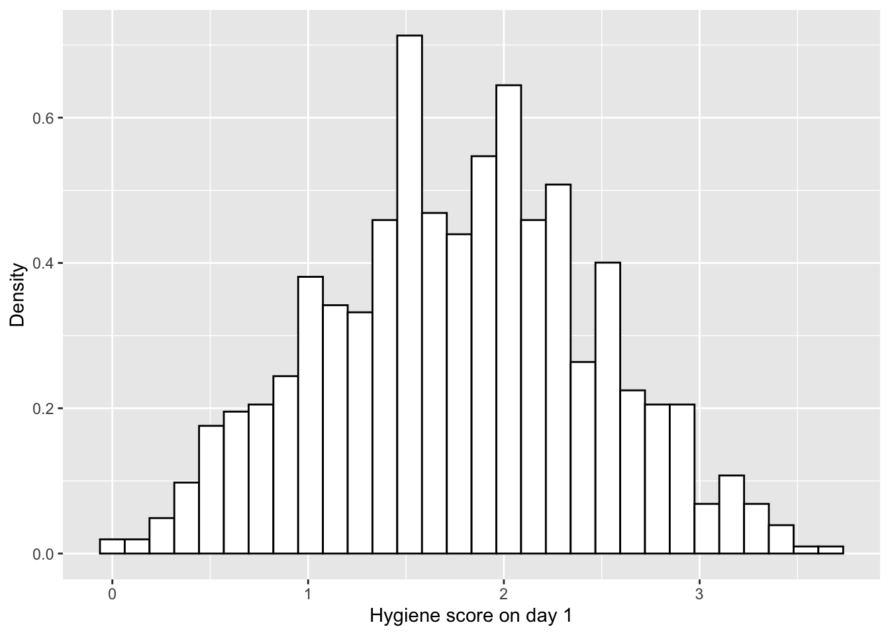
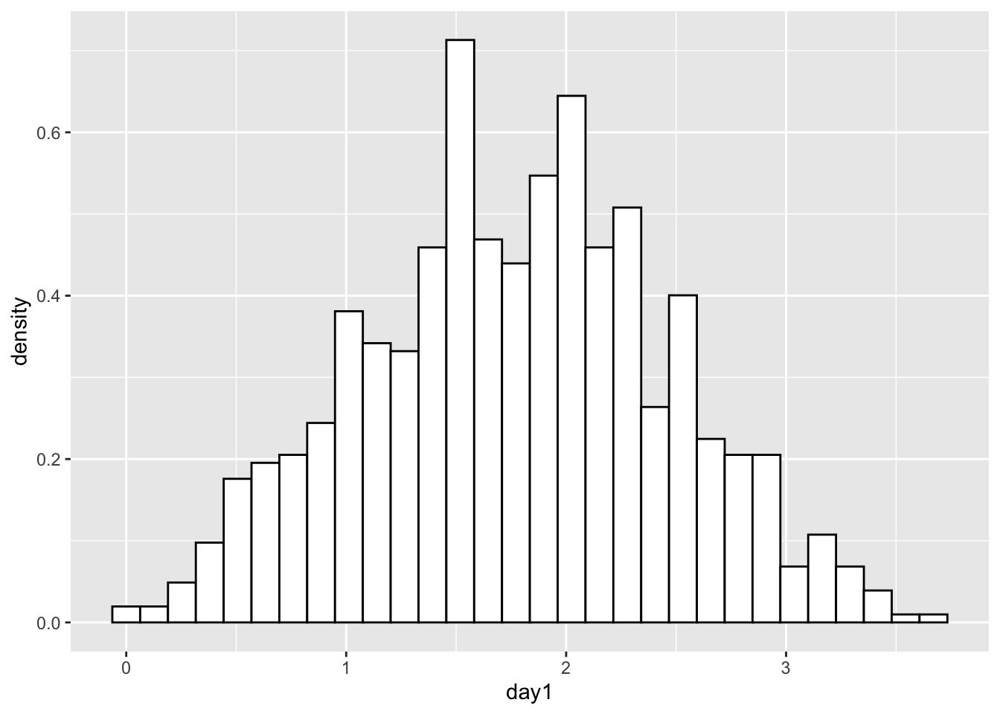
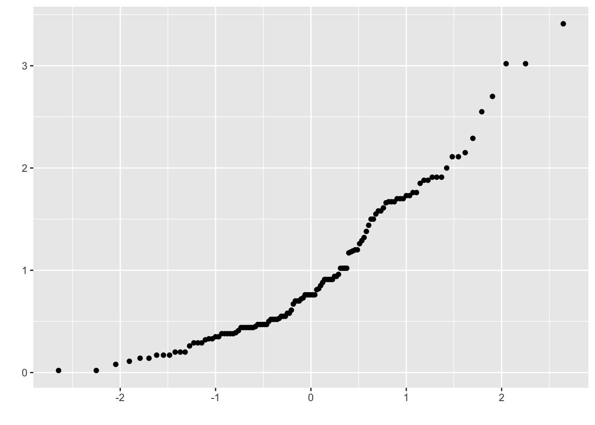

Tema_4_supuestos
Raymond L. Tremblay
2/7/2017
Add and activate packages. NOTE THE NEW FUNCTION to install all packages ONLY IF Needed…..
Visualize the distribution of the data “Histogram”
Los datos son de un festival de Rock y Heavy Metal en UK La categoria son 0 = You smell like a rotting corpse 4 = You smell like of sweet roses
library(readr)
DownloadFestival <- read_csv("Data/DownloadFestival.csv")## Parsed with column specification:
## cols(
## ticknumb = col_double(),
## gender = col_character(),
## day1 = col_double(),
## day2 = col_double(),
## day3 = col_double()
## )dlf <- DownloadFestival
dlf=subset(DownloadFestival, day1<5)
head(dlf)## # A tibble: 6 x 5
## ticknumb gender day1 day2 day3
## <dbl> <chr> <dbl> <dbl> <dbl>
## 1 2111 Male 2.64 1.35 1.61
## 2 2229 Female 0.97 1.41 0.290
## 3 2338 Male 0.84 NA NA
## 4 2384 Female 3.03 NA NA
## 5 2401 Female 0.88 0.08 NA
## 6 2405 Male 0.85 NA NAtail(dlf)## # A tibble: 6 x 5
## ticknumb gender day1 day2 day3
## <dbl> <chr> <dbl> <dbl> <dbl>
## 1 4749 Female 0.52 NA NA
## 2 4756 Female 2.91 0.94 NA
## 3 4758 Female 2.61 1.44 NA
## 4 4759 Female 1.47 NA NA
## 5 4760 Male 1.28 NA NA
## 6 4765 Female 1.26 NA NAhist.day1 <- ggplot(dlf, aes(day1)) +
geom_histogram(aes(y=..density..), colour="black", fill="white")
hist.day1+
labs(x="Hygiene score on day 1", y = "Density")## `stat_bin()` using `bins = 30`. Pick better value with `binwidth`.
hist.day1## `stat_bin()` using `bins = 30`. Pick better value with `binwidth`.
ggsave("histogram_festival_hygiene.pdf") # Can be either be a device function (e.g. png()), or one of "eps", "ps", "tex" (pictex), "pdf", "jpeg", "tiff", "png", "bmp", "svg" or "wmf" (windows only)## Saving 7 x 5 in image
## `stat_bin()` using `bins = 30`. Pick better value with `binwidth`.#Remove the outlier from the day1 hygiene score dlf\(day1 <- ifelse(dlf\)day1 > 5, NA, dlf\(day1) df\)Column = ifelse(df$column_to_be evaluated, replace_with_NA, otherwise_leave_as_before)
dlf$day1 <- ifelse(dlf$day1 > 5, NA, dlf$day1)
# Note here that we use ..density.. # CUAL ES LA DIFERENCIA entre densidad y frecuencia?
hist.day1 <- ggplot(dlf, aes(day1)) +
theme(legend.position = "none") +
geom_histogram(aes(y=..density..), colour="black", fill="white") +
labs(x="Hygiene score on day 1", y = "Density")
hist.day1## `stat_bin()` using `bins = 30`. Pick better value with `binwidth`.
The Normal Distribution
https://en.wikipedia.org/wiki/Normal_distribution
- visualization if the observed distribution follows a theoretical normal distribution
- Test to determine if the observed distribution follows a theoretical distribution
\[P(x)=\frac{1}{{\sigma\sqrt{ 2\pi}}}{e}^{\frac{{(x-µ)}^{2}}{{2\sigma}^{2}}}\]
# Ahora añadir la linea de distribución normal
hist.day1 +
stat_function(fun = dnorm,
args = list(mean = mean(dlf$day1,na.rm = TRUE),
sd = sd(dlf$day1 , na.rm = TRUE)),
colour = "red", size = 1)## `stat_bin()` using `bins = 30`. Pick better value with `binwidth`.
shapiro.test(dlf$day1) # don't use with more than 40 a 200 data point##
## Shapiro-Wilk normality test
##
## data: dlf$day1
## W = 0.99591, p-value = 0.03184length(dlf$day1)## [1] 809A third method
- The QQ plot method
#Q-Q plot for day 1:
qqplot.day1 <- qplot(sample = dlf$day3, stat="qq")## Warning: `stat` is deprecatedqqplot.day1## Warning: Removed 686 rows containing non-finite values (stat_qq).
Add a straight line on the qqplot
# This function is to add a straight line through the qqplot
qqplot.data <- function (vec) # argument: vector of numbers
{
# following four lines from base R's qqline()
y <- quantile(vec[!is.na(vec)], c(0.25, 0.75))
x <- qnorm(c(0.25, 0.75))
slope <- diff(y)/diff(x)
int <- y[1L] - slope * x[1L]
d <- data.frame(resids = vec)
ggplot(d, aes(sample = resids)) +
stat_qq() +
geom_abline(slope = slope, intercept = int, color="red")
}
qqplot.data(dlf$day3)## Warning: Removed 686 rows containing non-finite values (stat_qq).
ggsave("qqplot.png")## Saving 7 x 5 in image## Warning: Removed 686 rows containing non-finite values (stat_qq).dlf=DownloadFestival
#Quantifying normality with numbers
library(psych) #load the "psych" library, if you haven't already, for the describe() function.
#Using the describe() function for a single variable.
psych::describe(dlf$day2)## vars n mean sd median trimmed mad min max range skew kurtosis se
## X1 1 264 0.96 0.72 0.79 0.87 0.61 0 3.44 3.44 1.08 0.76 0.04Que es la varianza? The variance \[s^{ 2 }=\frac { \sum _{ i=1 }^{ n }{ (x_{ i }-\bar { x } ) } ^{ 2 } }{ n-1 } \]
Que es la desviación estandard
The standard deviation of the mean \[s=\sqrt { s^{ 2 } } \]
Multiple variables
#Two alternative ways to describe multiple variables.
psych::describe(cbind(dlf$day1, dlf$day2, dlf$day3))## vars n mean sd median trimmed mad min max range skew kurtosis se
## X1 1 810 1.79 0.94 1.79 1.77 0.70 0.02 20.02 20.00 8.83 168.97 0.03
## X2 2 264 0.96 0.72 0.79 0.87 0.61 0.00 3.44 3.44 1.08 0.76 0.04
## X3 3 123 0.98 0.71 0.76 0.90 0.61 0.02 3.41 3.39 1.01 0.59 0.06psych::describe(dlf[,c("day1", "day2", "day3")])## vars n mean sd median trimmed mad min max range skew kurtosis se
## day1 1 810 1.79 0.94 1.79 1.77 0.70 0.02 20.02 20.00 8.83 168.97 0.03
## day2 2 264 0.96 0.72 0.79 0.87 0.61 0.00 3.44 3.44 1.08 0.76 0.04
## day3 3 123 0.98 0.71 0.76 0.90 0.61 0.02 3.41 3.39 1.01 0.59 0.06Dicover the Mode. La moda en R
# the mode
library(modeest)## Registered S3 methods overwritten by 'rmutil':
## method from
## plot.residuals psych
## print.response httr##
## Attaching package: 'modeest'## The following object is masked from 'package:EnvStats':
##
## skewnessmfv(dlf$day1, method="mfv")## [1] 2mfv(dlf$day2, method="mfv")## [1] NAmfv(dlf$day3, method="mfv")## [1] NATest of normality, Shapiro Wilks Test
library(pastecs)
stat.desc(dlf$day3, basic = FALSE, norm = TRUE) # "norm=TRUE"" is to calculate the Shapiro Wilk Test## median mean SE.mean CI.mean.0.95 var std.dev
## 7.600000e-01 9.765041e-01 6.404352e-02 1.267805e-01 5.044934e-01 7.102770e-01
## coef.var skewness skew.2SE kurtosis kurt.2SE normtest.W
## 7.273672e-01 1.007813e+00 2.309035e+00 5.945454e-01 6.862946e-01 9.077516e-01
## normtest.p
## 3.804486e-07stat.desc(cbind(dlf$day1, dlf$day2, dlf$day3), basic = FALSE, norm = TRUE)## V1 V2 V3
## median 1.790000e+00 7.900000e-01 7.600000e-01
## mean 1.793358e+00 9.609091e-01 9.765041e-01
## SE.mean 3.318617e-02 4.436095e-02 6.404352e-02
## CI.mean.0.95 6.514115e-02 8.734781e-02 1.267805e-01
## var 8.920705e-01 5.195239e-01 5.044934e-01
## std.dev 9.444949e-01 7.207801e-01 7.102770e-01
## coef.var 5.266627e-01 7.501022e-01 7.273672e-01
## skewness 8.832504e+00 1.082811e+00 1.007813e+00
## skew.2SE 5.140707e+01 3.611574e+00 2.309035e+00
## kurtosis 1.689671e+02 7.554615e-01 5.945454e-01
## kurt.2SE 4.923139e+02 1.264508e+00 6.862946e-01
## normtest.W 6.539142e-01 9.083191e-01 9.077516e-01
## normtest.p 1.545986e-37 1.281630e-11 3.804486e-07round(stat.desc(dlf[, c("day1", "day2", "day3")], basic = FALSE, norm = TRUE), digits = 3)## day1 day2 day3
## median 1.790 0.790 0.760
## mean 1.793 0.961 0.977
## SE.mean 0.033 0.044 0.064
## CI.mean.0.95 0.065 0.087 0.127
## var 0.892 0.520 0.504
## std.dev 0.944 0.721 0.710
## coef.var 0.527 0.750 0.727
## skewness 8.833 1.083 1.008
## skew.2SE 51.407 3.612 2.309
## kurtosis 168.967 0.755 0.595
## kurt.2SE 492.314 1.265 0.686
## normtest.W 0.654 0.908 0.908
## normtest.p 0.000 0.000 0.000Levene’s Test: testing for assumption of normality among groups
#Levene's test for comparison of variances of exam scores in the two universities.
library(ggplot2)
library(car)
library(readr)
RExam <- read_csv("Data/RExam.csv")## Parsed with column specification:
## cols(
## exam = col_double(),
## computer = col_double(),
## lectures = col_double(),
## numeracy = col_double(),
## uni = col_double()
## )rexam=RExam
head(rexam)## # A tibble: 6 x 5
## exam computer lectures numeracy uni
## <dbl> <dbl> <dbl> <dbl> <dbl>
## 1 18 54 75 7 0
## 2 30 47 8.5 1 0
## 3 40 58 69.5 6 0
## 4 30 37 67 6 0
## 5 40 53 44.5 2 0
## 6 15 48 76.5 8 0ggplot(rexam, aes(numeracy, fill=as.factor(uni)))+
geom_histogram()+
facet_wrap(~uni)## `stat_bin()` using `bins = 30`. Pick better value with `binwidth`.
leveneTest(rexam$lectures, rexam$uni)## Warning in leveneTest.default(rexam$lectures, rexam$uni): rexam$uni coerced to
## factor.## Levene's Test for Homogeneity of Variance (center = median)
## Df F value Pr(>F)
## group 1 1.4222 0.2359
## 98leveneTest(rexam$lectures, rexam$uni, center = mean)## Warning in leveneTest.default(rexam$lectures, rexam$uni, center = mean):
## rexam$uni coerced to factor.## Levene's Test for Homogeneity of Variance (center = mean)
## Df F value Pr(>F)
## group 1 1.7306 0.1914
## 98leveneTest(rexam$computer, rexam$uni)## Warning in leveneTest.default(rexam$computer, rexam$uni): rexam$uni coerced to
## factor.## Levene's Test for Homogeneity of Variance (center = median)
## Df F value Pr(>F)
## group 1 0.1078 0.7434
## 98leveneTest(rexam$numeracy, rexam$uni)## Warning in leveneTest.default(rexam$numeracy, rexam$uni): rexam$uni coerced to
## factor.## Levene's Test for Homogeneity of Variance (center = median)
## Df F value Pr(>F)
## group 1 5.366 0.02262 *
## 98
## ---
## Signif. codes: 0 '***' 0.001 '**' 0.01 '*' 0.05 '.' 0.1 ' ' 1x=c(0,2,3,4,5,6,100,1000)
x## [1] 0 2 3 4 5 6 100 1000log(x+1)## [1] 0.000000 1.098612 1.386294 1.609438 1.791759 1.945910 4.615121 6.908755sqrt(x)## [1] 0.000000 1.414214 1.732051 2.000000 2.236068 2.449490 10.000000
## [8] 31.622777head(log(dlf$day1))## [1] 0.97077892 -0.03045921 -0.17435339 1.10856262 -0.12783337 -0.16251893head(dlf)## # A tibble: 6 x 5
## ticknumb gender day1 day2 day3
## <dbl> <chr> <dbl> <dbl> <dbl>
## 1 2111 Male 2.64 1.35 1.61
## 2 2229 Female 0.97 1.41 0.290
## 3 2338 Male 0.84 NA NA
## 4 2384 Female 3.03 NA NA
## 5 2401 Female 0.88 0.08 NA
## 6 2405 Male 0.85 NA NAdlf$lgday1=log(dlf$day1)
head(dlf)## # A tibble: 6 x 6
## ticknumb gender day1 day2 day3 lgday1
## <dbl> <chr> <dbl> <dbl> <dbl> <dbl>
## 1 2111 Male 2.64 1.35 1.61 0.971
## 2 2229 Female 0.97 1.41 0.290 -0.0305
## 3 2338 Male 0.84 NA NA -0.174
## 4 2384 Female 3.03 NA NA 1.11
## 5 2401 Female 0.88 0.08 NA -0.128
## 6 2405 Male 0.85 NA NA -0.163